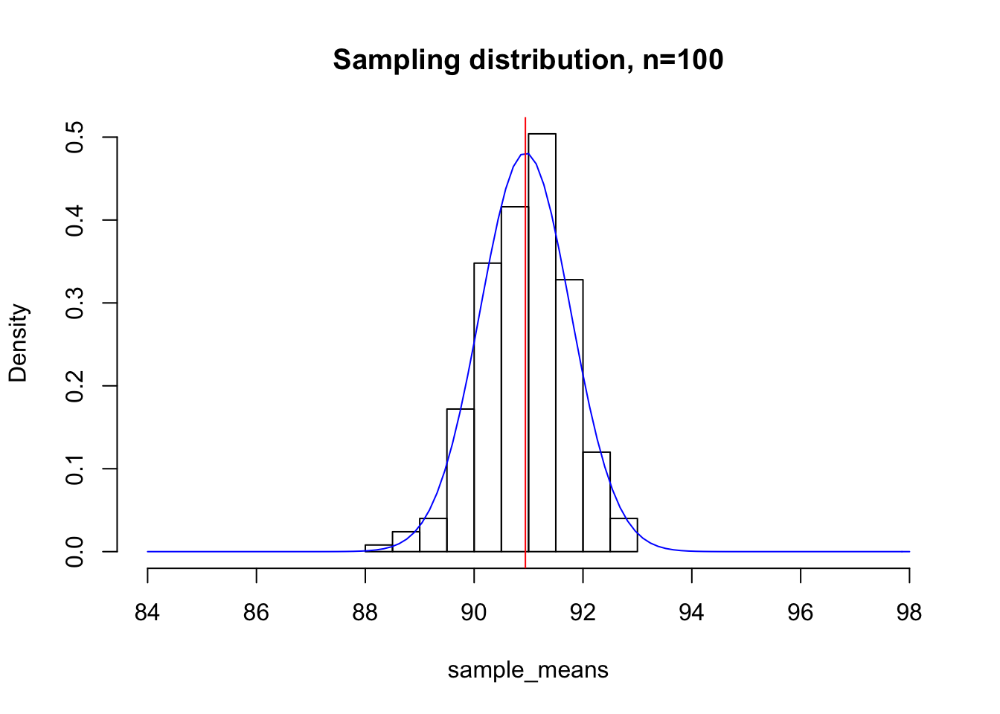

The Central Limit Theorem
Anthony Hung
2019-04-25
Last updated: 2020-02-20
Checks: 7 0
Knit directory: MSTPsummerstatistics/
This reproducible R Markdown analysis was created with workflowr (version 1.5.0). The Checks tab describes the reproducibility checks that were applied when the results were created. The Past versions tab lists the development history.
Great! Since the R Markdown file has been committed to the Git repository, you know the exact version of the code that produced these results.
Great job! The global environment was empty. Objects defined in the global environment can affect the analysis in your R Markdown file in unknown ways. For reproduciblity it’s best to always run the code in an empty environment.
The command set.seed(20180927) was run prior to running the code in the R Markdown file. Setting a seed ensures that any results that rely on randomness, e.g. subsampling or permutations, are reproducible.
Great job! Recording the operating system, R version, and package versions is critical for reproducibility.
Nice! There were no cached chunks for this analysis, so you can be confident that you successfully produced the results during this run.
Great job! Using relative paths to the files within your workflowr project makes it easier to run your code on other machines.
Great! You are using Git for version control. Tracking code development and connecting the code version to the results is critical for reproducibility. The version displayed above was the version of the Git repository at the time these results were generated.
Note that you need to be careful to ensure that all relevant files for the analysis have been committed to Git prior to generating the results (you can use wflow_publish or wflow_git_commit). workflowr only checks the R Markdown file, but you know if there are other scripts or data files that it depends on. Below is the status of the Git repository when the results were generated:
Ignored files:
Ignored: .DS_Store
Ignored: .RData
Ignored: .Rhistory
Ignored: .Rproj.user/
Ignored: analysis/.RData
Ignored: analysis/.Rhistory
Untracked files:
Untracked: analysis/dataviz.Rmd
Unstaged changes:
Modified: analysis/index.Rmd
Modified: analysis/powerAnalyses.Rmd
Note that any generated files, e.g. HTML, png, CSS, etc., are not included in this status report because it is ok for generated content to have uncommitted changes.
These are the previous versions of the R Markdown and HTML files. If you’ve configured a remote Git repository (see ?wflow_git_remote), click on the hyperlinks in the table below to view them.
| File | Version | Author | Date | Message |
|---|---|---|---|---|
| Rmd | e6a84ff | Anthony Hung | 2020-02-14 | correct typos |
| html | e6a84ff | Anthony Hung | 2020-02-14 | correct typos |
| html | 96722bd | Anthony Hung | 2019-08-07 | Build site. |
| html | 15ca1f1 | Anthony Hung | 2019-07-18 | Build site. |
| html | a3aa9e0 | Anthony Hung | 2019-07-18 | Build site. |
| html | ceb577e | Anthony Hung | 2019-07-12 | Build site. |
| Rmd | 6234571 | Anthony Hung | 2019-07-12 | commit changes |
| html | 397882b | Anthony Hung | 2019-05-30 | Build site. |
| html | 6d3e1c8 | Anthony Hung | 2019-05-28 | Build site. |
| html | c117ef1 | Anthony Hung | 2019-05-28 | Build site. |
| html | b291d24 | Anthony Hung | 2019-05-24 | Build site. |
| Rmd | a321d7b | Anthony Hung | 2019-05-24 | commit before republish |
| html | a321d7b | Anthony Hung | 2019-05-24 | commit before republish |
| html | c4bdfdc | Anthony Hung | 2019-05-22 | Build site. |
| html | 096760a | Anthony Hung | 2019-05-19 | Build site. |
| html | da98ae8 | Anthony Hung | 2019-05-18 | Build site. |
| Rmd | 239723e | Anthony Hung | 2019-05-08 | Update learning objectives |
| html | 2ec7944 | Anthony Hung | 2019-05-06 | Build site. |
| html | 536085f | Anthony Hung | 2019-05-06 | Build site. |
| html | ee75486 | Anthony Hung | 2019-05-05 | Build site. |
| html | 5ea5f30 | Anthony Hung | 2019-04-30 | Build site. |
| html | e0e8156 | Anthony Hung | 2019-04-30 | Build site. |
| html | e746cf5 | Anthony Hung | 2019-04-29 | Build site. |
| html | 22b3720 | Anthony Hung | 2019-04-26 | Build site. |
| html | ddb3114 | Anthony Hung | 2019-04-26 | Build site. |
| Rmd | 0edcad9 | Anthony Hung | 2019-04-26 | Add linear regression file |
| html | 0edcad9 | Anthony Hung | 2019-04-26 | Add linear regression file |
| Rmd | 2780f0a | Anthony Hung | 2019-04-26 | republish |
| html | 2780f0a | Anthony Hung | 2019-04-26 | republish |
| Rmd | a65f214 | Anthony Hung | 2019-04-26 | add summary thoughts to CLT |
| html | a65f214 | Anthony Hung | 2019-04-26 | add summary thoughts to CLT |
| Rmd | 9f13e70 | Anthony Hung | 2019-04-25 | finish CLT |
| html | 9f13e70 | Anthony Hung | 2019-04-25 | finish CLT |
Introduction
The central limit theorem (CLT) is a fundamental pillar to statistics and probability. Understanding it goes a long way to explain why we can make inferences about populations (biology) based on a limited number of samples (experiments) taken from those populations. Our objective today is to learn about what the CLT says and how this concept is used widely in science to apply statistical tests to sample data.
Definitions
The CLT states that for sufficiently large samples taken from a population with any population distribution, the sampling distribution of the mean tends towards a normal distribution centered around the true mean of the population. The power of this statement is that it does not matter what shape the population distribution takes. If our sample size is large enough, the distribution of our samples looks like a bell curve with a mean that is approximately equal to the population mean. More formally, when a continuous variable is dependent on many independent small, random factors, measurements of that variable will approximate a Gaussian distribution.
To go more in depth, let’s define what we mean by population and sampling distributions.
Example: Studying the heights of a population of wild deer
Imagine we are rangers at a National Park and are charged with finding the average height of all the deer (which number at 1,0000,000) in our park. One way to go about doing this would be go out one day and capture all 1,000,000 deer in the park and measure their heights. If you were to do so, you may obtain a dataset that looks like this:
deer_heights <- rbeta(1E6, 10, 1)*100
hist(deer_heights)
abline(v= mean(deer_heights), col="red")
mean(deer_heights)[1] 90.90923What we can see is that the histogram, or the population distribution of the 1,000,000 heights does not look like a bell curve, which means that the heights of the population of deer is not normally distributed. This is the population distibution, as it includes every single member of the population rather than representing a subset of the population. The mean of the population distribution of heights is 90.90923 (represented by the red line on the histogram). This the population mean.
Of course, you will almost never have the resources or time to be able to measure every single individual in a population you are interested in. For example, as a ranger you may go out and randomly capture a few representative samples, each containing 30 deer from your park, and measure their heights to compute the mean height within each sample. Each of the means of your samples is a sample mean, and plotting the many sample means you have computed will give you the sampling distribution.
Let’s look first at individual sample means. Say we go out on 5 sampling expeditions, capturing 25 deer each time.
for(i in 1:5){
print(mean(sample(deer_heights, 25, replace=F)))
}[1] 92.77171
[1] 91.69649
[1] 87.21777
[1] 90.20049
[1] 90.64276The sample means from each of our 5 samples differ somewhat, due to the nature of random sampling. Some of the sample means are higher than the population mean, and some are lower. What happens if we take many more samples and plot their distribution?
Below, we take 500 samples of size 25 from our original deer population, compute the means of each of those samples, and plot the sampling distribution.
sample_means <- c()
for(i in 1:500){
sample_means <- c(sample_means, mean(sample(deer_heights, 25, replace=F)))
}
hist(sample_means, freq = F, xlim = c(84, 98), main="Sampling distribution, n=25")
abline(v=mean(sample_means), col="red")
mean(sample_means)[1] 91.02532We can appreciate that even though our population distribution looked very left-skewed, our sampling distribution looks much more bell-shaped and normal. The mean of the sampling distribution is 90.8481, which is very close to the true population mean. This, in essence, is what the CLT tells us. Even though our population distribution was not normally distributed, the shape of the sampling distribution tends to a normal distribution centered around the true population mean as the sample size increases. The CLT not only tell us what shape to expect for our sampling distribution, but also how spread out our sampling distribution is expected to be depending on our sample size. What happens if instead of sampling 25 deer at a time, we sample 100?
sample_means <- c()
for(i in 1:500){
sample_means <- c(sample_means, mean(sample(deer_heights, 100, replace=F)))
}
hist(sample_means, xlim = c(84, 98), main="Sampling distribution, n=100", freq = F)
abline(v=mean(sample_means), col="red")
mean(sample_means)[1] 90.94171By keeping both of our x-axis ranges constant, we can appreciate that the sampling distribution with sample sizes of 100 deer is much more tightly centered around the mean than the distribution with sample sizes of 25.
Standard deviation of sampling distribution
Mathematically, the relationship between the sample size and the standard deviation of the sampling distribution as n tends towards large numbers is given by:
\[\sigma_{sampling} = \frac{\sigma}{\sqrt{n}}\]
The relationship between the sample distribution standard deviation and the sample size demonstrates why statistical inferences improve with larger sample sizes. As your n increases, you have more certainty in your estimates, since your sample statistics are more likely to be close to the true population parameters.
As a gut-check and to test this relationship, let us revisit our most recent plot of the sampling distribution for n=100. Here, I have overlaid a normal distribution with mean \(\mu = \mu_{population}\) and standard deviation \(\sigma = \frac{\sigma_{population}}{\sqrt{100}}\) in blue.
hist(sample_means, xlim = c(84, 98), main="Sampling distribution, n=100", freq = F)
curve(dnorm(x, mean = mean(sample_means), sd = sd(deer_heights)/sqrt(100)), add=T, col="blue")
abline(v=mean(sample_means), col="red")
CLT and why the normal distribution is so prevalent
The CLT not only is useful for science in allowing us to apply many fundamental statistical tests to sampling distributions, but it also explains why we see the normal distribution so often in nature. For example, you may know that the height of people in a population is distributed normally. The reason behind this fascinating result is that the height of a person is contributed to by a large number of random variables, including nutrition, genetics, other aspects of environment, etc. Even just looking at the genetics piece of the equation, height is known as a highly polygenic trait, which means many many different loci across the genome contribute genetically to a person’s height, and each locus can be thought of as a random variable. In the end, you can think of a person’s height as the sum of the value of a large number of random variables. The CLT tells us that the sum of the distribution of a large number of random variables looks like a normal distribution, which explains this result.
CLT \(\ne\) Law of Large Numbers
The CLT is often confused with the definition for the Law of Large numbers, which states that as the size of an individual sample is increased, the more accurate of an estimate the sample statistic will be of a population parameter Taken to the near limit, you can imagine that if you were able to sample 999,999 deer and measure their heights, your sample estimate for the mean height of the entire deer population would most likely be very good!
In contrast, the CLT does not say anything about individual samples and their estimates of population parameters. Instead, it describes the shape of the sampling distribution, which encompasses what one would expect to see through taking many samples from the population.
Key points about the CLT
The CLT describes the characteristics of a sampling distribution, not individual samples themselves.
The CLT allows us to apply many of the statistical tests that are commonly used to a wide variety of situations. For example, in nature there is no such thing as a perfectly normally distributed population. However, the CLT tells us that if we have a large enough sample size, we can always expect to see a normally distributed sampling distribution, which means we can apply statistical tests that assume normality on sampling distributions.
The statement of the CLT allows us to use information we calculate based on a random representative sample to infer parameters of the population. This is of great usefulness to us a scientists, as it enables inference. Imagine if the only way to obtain accurate measurements of a population of cells, mice, or patients was to measure every single last one!
The precision of the estimates we obtain from our samples depends very much on the sample size, or number of individuals contained within each sample.
The shape of the population distribution determines how large of a sample size is required for the CLT to hold. If a population is very far from normally distributed, you many need much large sample sizes for the CLT to hold.
The fact that even with large sample size, our estimates of the population mean have some amount of variance around the true population mean gives us an idea of the importance of replicating experiments. Replication allows us to get some sense of how large the standard deviation of our sampling distribution is, and averaging across replicates increases the accuracy of our estimates.
sessionInfo()R version 3.6.1 (2019-07-05)
Platform: x86_64-apple-darwin15.6.0 (64-bit)
Running under: macOS Mojave 10.14.6
Matrix products: default
BLAS: /Library/Frameworks/R.framework/Versions/3.6/Resources/lib/libRblas.0.dylib
LAPACK: /Library/Frameworks/R.framework/Versions/3.6/Resources/lib/libRlapack.dylib
locale:
[1] en_US.UTF-8/en_US.UTF-8/en_US.UTF-8/C/en_US.UTF-8/en_US.UTF-8
attached base packages:
[1] stats graphics grDevices utils datasets methods base
other attached packages:
[1] workflowr_1.5.0
loaded via a namespace (and not attached):
[1] Rcpp_1.0.3 rprojroot_1.3-2 digest_0.6.23 later_1.0.0
[5] R6_2.4.1 backports_1.1.5 git2r_0.26.1 magrittr_1.5
[9] evaluate_0.14 stringi_1.4.5 rlang_0.4.4 fs_1.3.1
[13] promises_1.1.0 whisker_0.4 rmarkdown_1.18 tools_3.6.1
[17] stringr_1.4.0 glue_1.3.1 httpuv_1.5.2 xfun_0.12
[21] yaml_2.2.1 compiler_3.6.1 htmltools_0.4.0 knitr_1.26